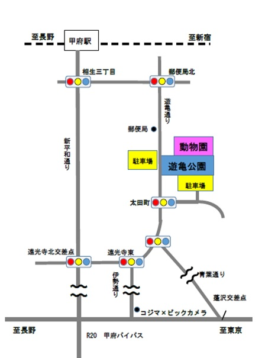

開園時間
- 4～10月：9時00分～17時00分（入園は16時30分まで）
- 11～3月：9時30分～16時30分（入園は16時00分まで）
開園時間・料金・園内マップ・交通案内。ご来園前にご確認ください。
甲府市遊亀公園附属動物園は大正8年に開設され、100周年を迎えた歴史のある動物園です。甲府市のほぼ中心にある都市型の動物園で、動物をより近くで観察でき、だれでも気軽に楽しめる動物園です。
Admission
| 区分 | 料金 |
|---|---|
| 大人 | 320円 |
| 子ども（小・中学生） | 30円 |
| 区分 | 料金 |
|---|---|
| 大人 | 270円 |
| 子ども（小・中学生） | 20円 |
※本市に住所を有する心身障がい者（療育手帳又は身体障がい者手帳に記載されている障がいの程度がB1以上または5級以上）の方と付添の方1名の入園料は免除になります。入園の際は、必ず窓口に手帳をお見せください。
以下の施設で教育活動を目的とする入園については、入園料を減額または免除することができます。減額・免除を受ける場合は、許可申請書を動物園窓口に提出し、その許可を受けてください（許可証の交付には数日かかります）。当日申請は原則として受け付けておりません。期日に余裕をもって申請してください。
※上記すべてにおいて付き添いの父兄等保護者については有料（320円）
※付き添いの父兄等保護者については有料（320円）。なお、町内会・自治会・私立サークル等の活動については対象外となります。
Map

Access
甲府南ICより甲府駅方面へ約10分（駐車場あり）。カーナビゲーションをご利用の場合は「山梨県甲府市太田町8-3」で検索してください。
JR中央線「甲府駅」南口より山梨交通バス（伊勢町行き）にて「遊亀公園前」下車。
所在地：〒400-0865 山梨県甲府市太田町10番1号 ／ 電話番号：055-233-3875

Please
動物たちに食べ物をあげないでください。
犬などのペットを連れての入園はできません。
大きな音を出すと動物がびっくりしてしまうのでご注意ください。
ふれあい動物にはやさしくふれあいましょう。